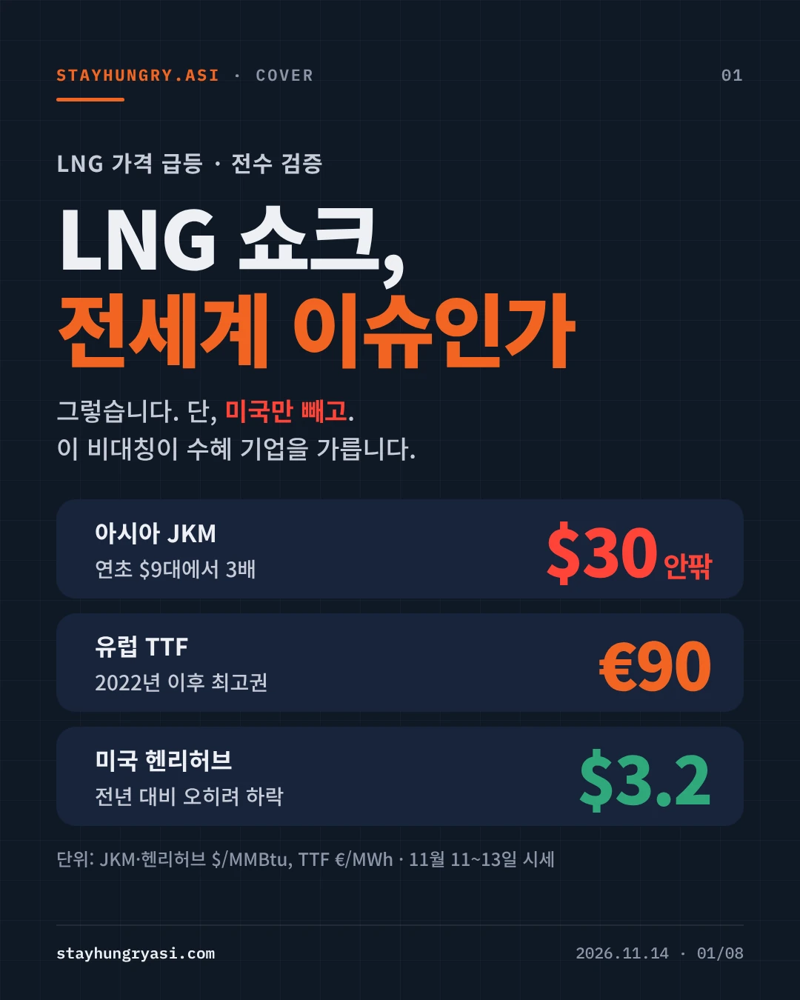
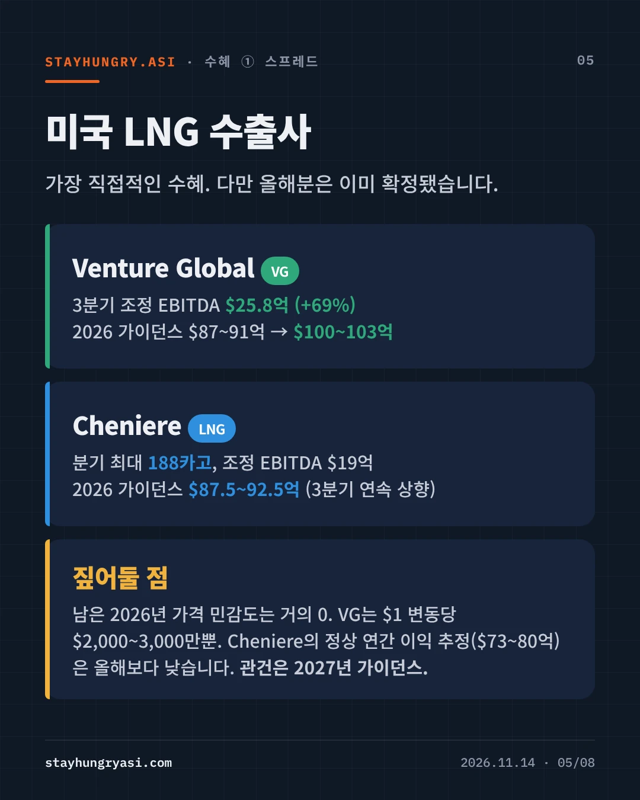
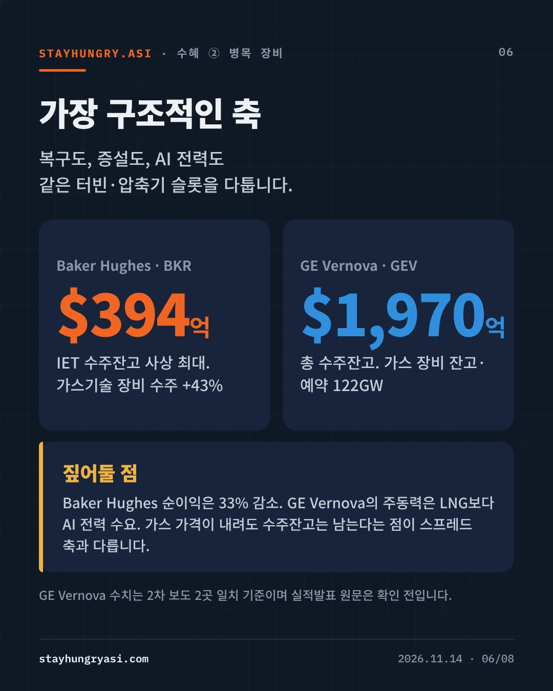
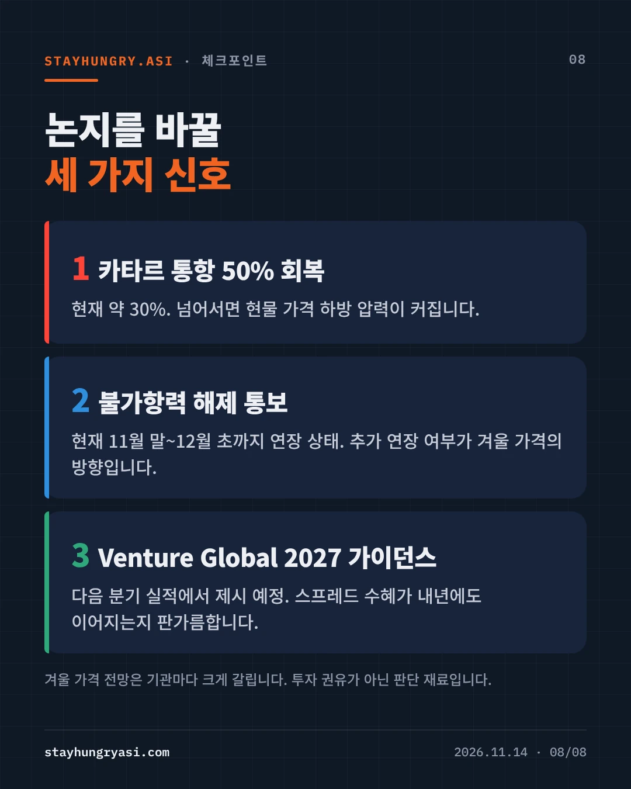

데이터 기준 2026년 11월 14일(한국 시간) · stayhungryasi.com
표기 규칙: 수치는 출처 기준 사실이다. 수혜 순위와 시나리오는 작성자의 주관적 판단이다. 확인하지 못한 항목은 '미확인'으로 적었다. 투자 권유가 아니다.
핵심만 8장으로 요약했다. 이미지를 누르면 크게 볼 수 있다.
그렇다. 다만 미국은 예외다. 전쟁 전 호르무즈 해협은 세계 LNG 교역의 약 20%가 지나던 길목이었고, 2월 말 전쟁 발발 뒤 사실상 막혔다. 유럽은 낮은 저장률로 겨울에 들어섰고 아시아와 현물 물량을 두고 경쟁한다.
| 지표 | 값 | 기준 |
|---|---|---|
| 2026년 세계 LNG 공급 | -3% | IEA(11월 3일). 약 20bcm, 사상 최대 연간 감소. 호르무즈 차질이 연말까지 지속된다는 전제 |
| 카타르·UAE 선적 감소(3~10월) | 60bcm+ | IEA. 같은 기간 비걸프 생산은 40bcm 이상 증가 |
| 2026~2030 누적 공급 손실 | 150bcm | IEA 추정 |
| EU 가스 저장률 | 72.4% | 11월 9일. 2017~2025년 범위에서 같은 시기 최저 |
| 유럽 TTF 52주 고점 | €104.355 | MWh당. 2022년 이후 최고권 |
| 지표 | 가격(MMBtu당) | 기준 |
|---|---|---|
| 아시아 JKM | $29.67 | 11월 12일 현물 지표 |
| 유럽 TTF | $28.33 | 11월 12일, 달러 환산 |
| 미국 헨리허브 | $3.25 | 11월 12일 선물 |
세 값은 같은 출처(LNG Price Index)의 같은 날 수치다. JKM 선물(Platts)은 11월 11일 31.325달러, 52주 고점 32.84달러로 지표마다 차이가 있다. TTF는 10월 30일 103.94유로에서 11월 6일 85.59유로로 17.7% 내린 뒤 11월 12일 90.09유로로 반등했다. 방향을 한쪽으로 단정하기 어렵다.
| 구분 | 규모 | 복구 |
|---|---|---|
| 구조적 | 라스라판 4·6호기, 연 1,280만 톤. 카타르 수출능력의 17% | 약 3년(9월 21일 CEO 발언, 10월 29일 재확인). 3월 초기 추정은 3~5년 |
| 되돌릴 수 있음 | 미파손 12개 설비 | 해협 안전 확인 뒤 약 2개월(QatarEnergy 예상) |
부분 회복은 이미 시작됐다. 10월 걸프에서 LNG를 싣고 나온 선박은 31척으로 9월 23척보다 늘어 전쟁 후 최다였다. UAE는 전쟁 전 수준으로 돌아왔고 카타르는 30%를 조금 넘는다(S&P Global 집계). 불가항력 선언은 11월 말에서 12월 초까지 연장된 상태다. 폴란드 Orlen은 11월 10일 QatarEnergy와의 장기계약을 처음으로 해지했다.
| 축 | 기업 | 확인된 사실 | 짚어둘 점 |
|---|---|---|---|
| 스프레드 | Venture Global (VG) | 3분기 조정 EBITDA 25.8억 달러(+69%). 2026 가이던스 87~91억 달러에서 100~103억 달러로 상향 | 순이익 25억 달러에는 비현금 스왑 이익 14억 달러가 들어 있다. 남은 2026년 민감도는 1달러 변동당 2,000~3,000만 달러 |
| 스프레드 | Cheniere (LNG) | 분기 최대 188카고, 조정 EBITDA 19억 달러. 가이던스 87.5~92.5억 달러(3분기 연속 상향) | 미판매 물량은 약 50TBtu뿐이다. 정상 연간 이익 추정 73~80억 달러는 올해보다 낮다 |
| 병목 장비 | Baker Hughes (BKR) | IET 수주잔고 394억 달러로 사상 최대. 가스기술 장비 수주 +43% | 순이익은 33% 감소 |
| 병목 장비 | GE Vernova (GEV) | 총 수주잔고 1,970억 달러. 가스 장비 잔고·예약 122GW | 주동력은 AI 전력 수요. 2차 보도 2곳 일치 기준, 원문 미확인 |
| 운송 | 한국 조선 3사 | 1~10월 대형 LNG선 발주 76척(전년 동기 17척), 한국 44척·중국 32척. 3분기 합산 영업이익 2.27조원(+43.6%) | 10월 발주 7척 중 5척이 중국. 상반기 59척에서 7~10월 17척으로 둔화. 신조선가는 두 달 새 350만 달러 하락 |
작성자 판단으로 가장 구조적인 축은 병목 장비다. 복구, 증설, AI 전력이 같은 터빈·압축기 생산 슬롯을 다투기 때문에 가스 가격이 내려도 수주잔고는 남는다. 스프레드 축은 가장 직접적이지만 2026년분은 이미 확정됐고 2027년은 호르무즈 상황에 따라 양방향이다. 조선은 과거 고선가 물량으로 실적은 강하지만 신규 수주의 가격과 점유율이 약해지고 있다.
초안의 수치를 1차 출처와 다시 대조해 세 가지를 바로잡았다.
| 처음 서술 | 검증 결과 |
|---|---|
| 라스라판 복구 3~5년 | 약 3년으로 단축. 3~5년은 3월의 초기 추정이다 |
| Cheniere 주당순이익이 예상치 하회 | 기준 차이. 순이익 기준 5.65달러는 예상 4.33달러를 웃돌았고, Zacks 조정 기준 3.62달러만 4.20달러에 못 미쳤다 |
| 가격이 꺾이는 중 | 단정 불가. TTF는 17.7% 내린 뒤 90.09유로로 반등했다 |
| 시나리오 | 가격 방향 | 상대적 수혜 순위 |
|---|---|---|
| 호르무즈 정상화 | 현물 급락 가능. 구조적 17%만 남는다 | 병목 장비 > 조선 > 스프레드 |
| 현 상태 지속 | 30달러 안팎 유지, 한파 때마다 급등 | 스프레드 ≥ 병목 장비 > 조선 |
| 추가 확전 | 2022년 고점 재시험 가능 | 스프레드 > 병목 장비. 수요 파괴는 빨라진다 |
순위는 위 사실에 근거한 작성자 판단이며 확률은 제시하지 않았다.